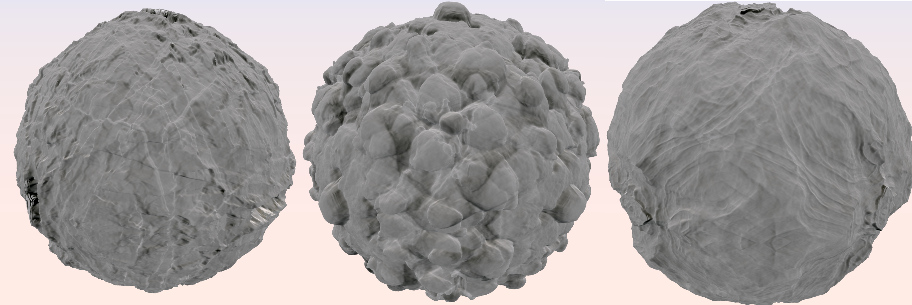

Axel Paris - PhD Student in Computer Graphics
Home
Publications
Resume
Email
Twitter
Detail Synthesis for Distance Fields and Blobs
May 3, 2020.

Adding details to implicit surfaces, whether they are defined as distance fields or blob construction trees,
has been a challenging problem for many years. As opposed to meshes, implicits do not provide an explicit parameterization of the surface.
This prevents the use of classic displacement maps used on mesh models, which are based on texture mapping: the process of applying a 2D image
to a 3D surface.
Traditionally, adding details to implicits is done by modifying the scalar field with 3D noise using blending or classic CSG operators. You can see many
examples of this in Shadertoy: here, here and there just to name a few.
While such technique can theoritically add infinite details, the self-similar appearance of the noise function used is limitating.
Futhermore, adding 3D noise everywhere in the scalarfield may create disjoint fragments in the object, often referred to as floating parts, and usually
not desired.
In our paper about block fracturing, we show how to use a popular technique in computer graphics which
is triplanar mapping, and apply it to implicits to increase the level of detail of the shape while retaining control for the designer. The proposed method
has the advantage of offering on-the-fly parameterization of the implicit function.
Triplanar mapping
While trying to find citable references for triplanar mapping when we were writing the paper, I was surprised to find out that it was almost never discussed
in academic research. I suspect this is the case because the technique comes from the industry - but this is still surprising since triplanar mapping is used
everywhere in computer graphics. The only citable reference of the method that we could find is from
an article in GPU Gems
3 by Ryan Geiss.
The idea behind triplanar mapping is to use the world space position of a point `\mathbf{p}` and its normal `\mathbf{n}` to determine a parameterization in 2D space.
This has a big advantage: the surface you are trying to map to the texture does not need an explicit parameterization, which is perfect for implicits. The final texture
contribution `f` at a given point `\mathbf{p}` and normal `\mathbf{n}` can be defined as:
`f(\mathbf{p}, \mathbf{n}) = \sum_{i=0}^{3} \alpha_i(\mathbf{n}) \cdot t \circ \gamma_i(\mathbf{p})`
The weighting function `\alpha_i` computes the contribution of each mapping of `\mathbf{p}` according to the dot product between the normal and the unit axis-aligned vectors:
`\alpha_i(\mathbf{n}) = | \mathbf{n} \cdot u_i |`. The function `\gamma_i` computes the projection of `\mathbf{p}` on the i-th plane in world space and finally, the function `t` denotes
the 2D function which we want to map to our surface, and can be anything from a baked texture to a procedural sum of noises.
The function `f(\mathbf{p}, \mathbf{n})` can be used directly to texture a implicit surfaces with albedo, as shown in the following figure:
An implicit sphere and a quadric curve textured using triplanar mapping, with the texture shown in the bottom left.
Rendering was performed using Sphere Tracing.
As I am working on terrain modeling for my PhD, I am trying to determine where the line draws between geometric and texture details, that is "When does geometry become texture ?". When using
implicit primitives, you have a very nice and compact representation of the shape - but you have less tools when it comes to texturing. So I thought it was a good idea to extend the use of
triplanar mapping for implicit primitive, to create more geometric details on the surface. This can be done by warping space.
Warping an implicit surface
Lipschitz Bound and Sphere Tracing
References